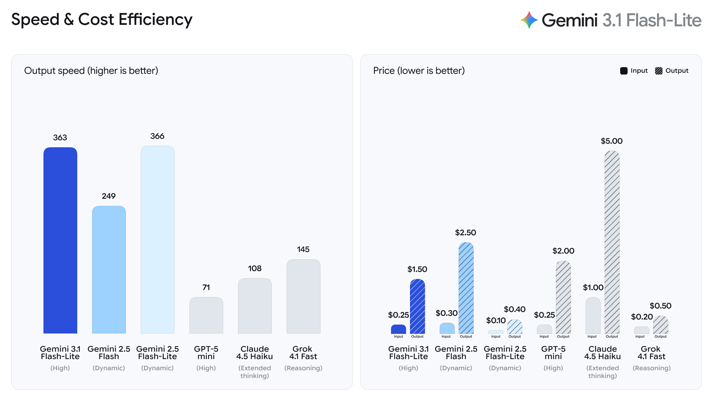
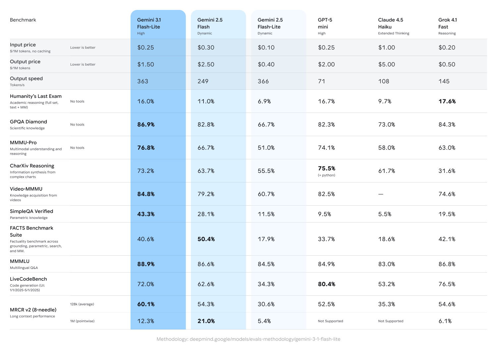

Gemini 3.1 Flash-Lite: Built for intelligence at scale
Mar 03, 2026
|Get best-in-class intelligence for your highest-volume workloads.
Equipe do Google Gemini

Today, we're introducing Gemini 3.1 Flash-Lite, our fastest and most cost-efficient Gemini 3 series model. Built for high-volume developer workloads at scale, 3.1 Flash-Lite delivers high quality for its price and model tier.
Starting today, 3.1 Flash-Lite is rolling out in preview to developers via the Gemini API in Google AI Studio and for enterprises via Vertex AI.
Cost-efficiency without compromise
Priced at just $0.25/1M input tokens and $1.50/1M output tokens, 3.1 Flash-Lite delivers enhanced performance at a fraction of the cost of larger models. It outperforms 2.5 Flash with a 2.5X faster Time to First Answer Token and 45% increase in output speed, according to the Artificial Analysis benchmark while maintaining similar or better quality. This low latency is needed for high-frequency workflows, making it an ideal model for developers to build responsive, real-time experiences.

Gemini 3.1 Flash-Lite outperforms 2.5 Flash in speed and quality.
3.1 Flash-Lite achieves an impressive Elo score of 1432 on the Arena.ai Leaderboard and outperforms other models of similar tier across reasoning and multimodal understanding benchmarks, including 86.9% on GPQA Diamond and 76.8% on MMMU Pro–even surpassing larger Gemini models from prior generations like 2.5 Flash.

Adaptive intelligence at scale for developers
Beyond its raw performance, Gemini 3.1 Flash-Lite comes standard with thinking levels in AI Studio and Vertex AI, giving developers the control and flexibility to select how much the model “thinks” for a task, which is critical for managing high-frequency workloads. 3.1 Flash-Lite can tackle tasks at scale, like high-volume translation and content moderation, where cost is a priority. And it can also handle more complex workloads where more in-depth reasoning is needed, like generating user interfaces and dashboards, creating simulations or following instructions.
3.1 Flash-Lite instantly fills an e-commerce wireframe with hundreds of products in different categories.
3.1 Flash-Lite can generate dynamic weather dashboards in real-time, using live forecasts and historical data.
3.1 Flash-Lite creates a SaaS agent capable of executing versatile, multi-step tasks for a business.
3.1 Flash-Lite can analyze and sort large numbers of content like images quickly.
Early-access developers on AI Studio and Vertex AI, and companies like Latitude, Cartwheel and Whering are already using 3.1 Flash-Lite to solve complex problems at scale. Early testers highlighted 3.1 Flash-Lite’s efficiency and reasoning capabilities, saying it can handle complex inputs with the precision of a larger-tier model, plus follow instructions and maintain adherence.
We look forward to seeing what you build with 3.1 Flash-Lite and the rest of the Gemini 3 series models.
Get the latest news from Google in your inbox
Sign up for our newsletters with product updates, event information, special offers, and more.
Done. Just one step more.
Check your inbox to confirm your subscription.
You can also subscribe with a .
Your information will be used in accordance with Google's privacy policy. You may opt out at any time.